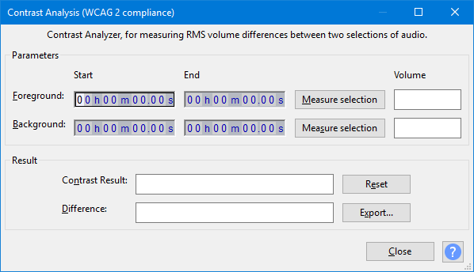

Contrast
From Audacity Development Manual
Contrast Analysis can analyze two different selections in an audio track so as to determine the RMS difference (contrast) between foreground (speech) and background (music, audience noise or similar). The purpose is to determine if the speech will be intelligible to the hard of hearing.
You can also use the tool more generally to measure the RMS level of selections.
- Accessed by:
- 
To use Contrast Analysis, select a region in an audio track that is typical of foreground audio, either by clicking and dragging with the mouse, or by entering start and end values in Selection Toolbar. Open Contrast and measure that selection. Use the mouse or Selection Toolbar again to select a region that is typical of background audio and measure that in Contrast. Contrast then displays the RMS difference between the selections.
The time controls in Contrast are intended only to show the time range of a selection once it has been measured in Contrast Analysis. The controls cannot be used to change the selection.
Instructions
With a single audio track selected, choose then:
Step One:
- Select a region containing the speech (this is the "foreground" selection)
- Click the button in the "Parameters" box in the "Foreground:" row; the start and end times of the selection will be displayed
- The RMS of the selected foreground audio will be displayed in the "Volume" box at the end of the row.
Step Two:
- Select a region containing only the background sound (this is the "background" selection)
- Click on the button in the "Parameters" box in the "Background:" row ; the start and end times of the selection will be displayed
- The RMS of the selected background audio will be displayed in the "Volume" box at the end of the row.
- The Start and End times of the regions that have been measured are displayed in the time controls.
Result:
- Contrast Result: Shows if the difference between foreground and background gives a pass or fail against the "WCAG 2.0, Success Criteria 1.4.7" guideline for accessible audio. A pass is given if the difference is 20 dB or more.
- Difference: The actual RMS difference value found.
| To ensure the track is fully compliant with WCAG2, you should check the contrast between foreground and background in several places. |
The Buttons
- Clears all the parameters and result values.
- Saves the foreground/background values and the result to a text file for proof that you checked your audio file. If you export again to the same file, the new result will be appended underneath the previous one.
- Clears (resets) and closes the Contrast Analysis window.
-
 Links to this "Contrast" page.
Links to this "Contrast" page.
Limitations
- Contrast does not include any audio behind time zero (0.0 on the Timeline) in its RMS calculation. Audio behind zero is indicated by two left-pointing arrows at the start of the waveform.
- Although Contrast can only display the RMS values of two selections at once, you may open a new project and analyze two different selection in that project.
- Empty track space within the selected region is ignored by the analysis ("silent" or low volume audio that looks like a "flat line" is taken into account by the analysis).
- For correct measurement of stereo tracks, audio data must be present in both left and right channels of the selection.